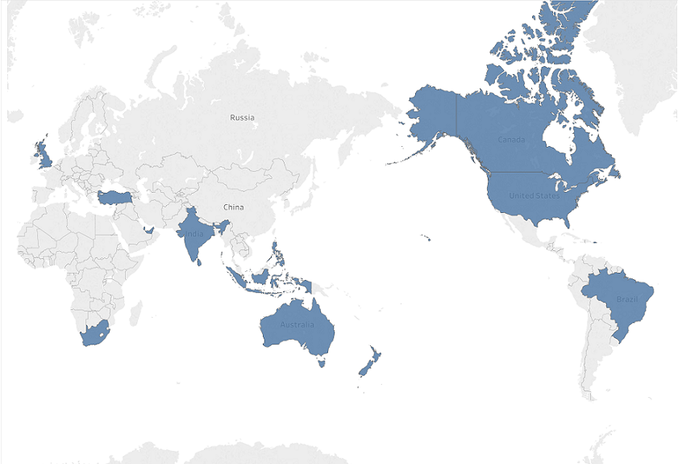

This dataset has 15 countries and 140 cities of interest. The countries are highlighted below, and the cities will be explored more closely further on It's important to note that large countries such as China or Russia, or even countries that are strong at the culinary arts (e.g., Italy, Japan) are not included. This does have an effect on the conclusions I will try to draw from this project. 
This dataset has 135 different cuisines. Let's take a look at the top 10.
The dataset used for this visualization can be found on GitHub along with its description.
The restaurants from this database are given ratings from a range of [0,5] with increments of 0.1. The Pricing is similarly in a range of values. Each restaurant belongs to a different price range. The prices are categorized between 1-4, with an increment of 1. 4 is of course the most expensive.